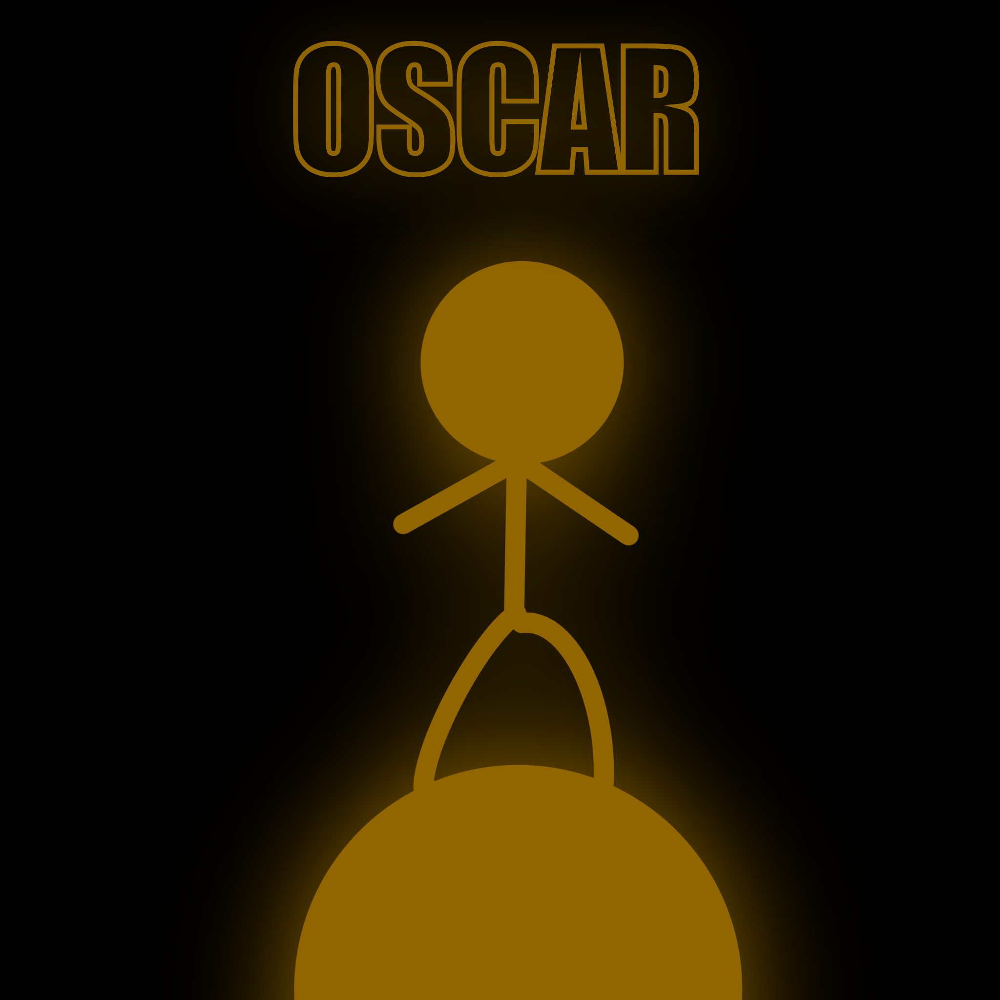

Oscars 2023 Review

The 2023 Oscars ceremony was a night to remember with outstanding performances and deserving winners. The host did an excellent job keeping the audience engaged and entertained throughout the show. The set design and production were breathtaking and added to the overall glamour of the event.
The nominated movies showcased a diverse range of talent and storytelling, making it a tough competition for the categories. The winners were deserving of their awards, and their acceptance speeches were heartfelt and inspiring.
However, there were a few moments of controversy, with some fans disappointed with certain categories' outcomes. Additionally, the length of the show may have been a bit too long for some viewers.
Overall, the 2023 Oscars ceremony was a success, showcasing the best of the entertainment industry and celebrating the achievements of talented individuals. It was a night to remember and definitely worth watching for any movie lover.
Product Review: YouTube
YouTube is one of the most popular and widely used video-sharing platforms on the internet. It has
revolutionized the way people consume video content, and has become a go-to source for information,
entertainment, and education for millions of people around the world.
One of the best things about YouTube is its sheer size and diversity of content. You can find just about
anything on YouTube, from music videos to cooking tutorials, movie trailers, live streams, and more.
This vast selection ensures that there's always something new and interesting to discover, no matter
what your interests may be.
Another great feature of YouTube is its user-friendly interface. It's easy to navigate, and you can
quickly search for videos by keyword, topic, or channel. You can also create your own playlists, save
videos to watch later, and interact with other users through comments, likes, and shares.
However, there are some downsides to YouTube as well. One of the biggest concerns is the amount of
inappropriate content that can be found on the platform, including hate speech, violence, and
misinformation. While YouTube has made efforts to crack down on this type of content, it's still a
problem that many users have to contend with.
Overall, YouTube is a valuable and entertaining platform that has something for everyone. While it does
have its flaws, its vast selection of content and user-friendly interface make it a must-have for anyone
looking to consume video content online.